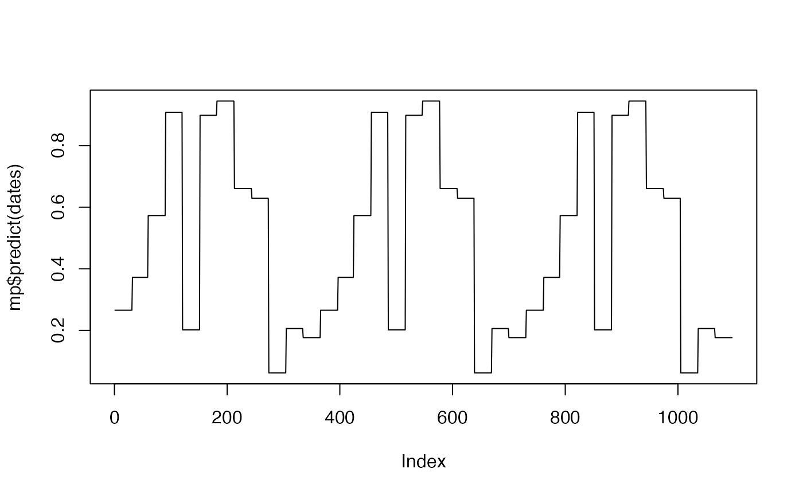

Create a function of time for monthly parameters
Create a function of time for monthly parameters
Active bindings
parametersvector of parameters with length 12.
Methods
Method new()
Initialize a monthlyParams object
Arguments
paramsnumeric vector of parameters with length 12.
Predict the monthly paramete
Arguments
xdate as character or month as numeric.
Update the monthly parameters
Usage
monthlyParams$update(params)
Arguments
paramsnumeric vector of parameters with length 12.
Method clone()
The objects of this class are cloneable with this method.
Usage
monthlyParams$clone(deep = FALSE)
Arguments
deepWhether to make a deep clone.
Examples
set.seed(1)
params <- runif(12)
mp <- monthlyParams$new(params)
t_now <- as.Date("2022-01-01")
t_hor <- as.Date("2024-12-31")
dates <- seq.Date(t_now, t_hor, by = "1 day")
plot(mp$predict(dates), type = "l")
